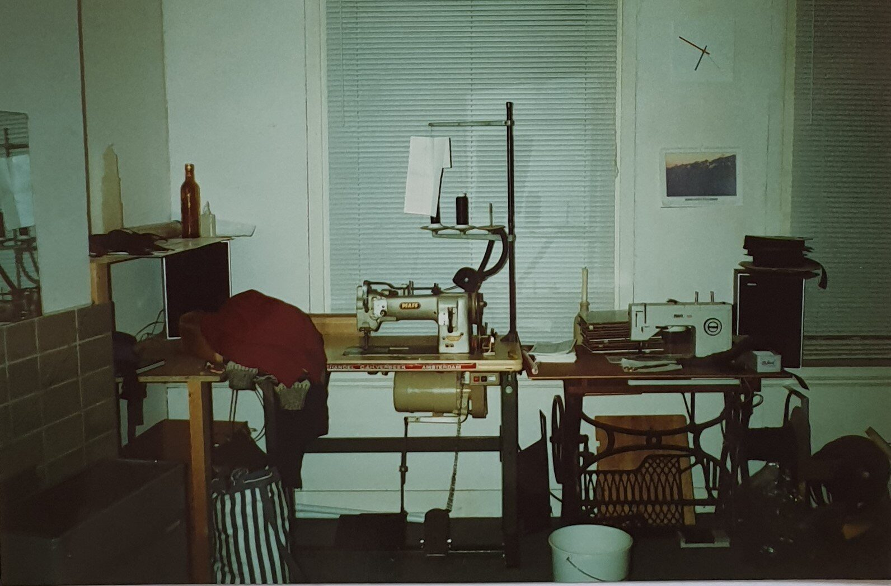

About us

History
In the year 1990, Radical Design came into existence, founded by Hubert van Ham. His journey began as a repair technician for outdoor shops, coupled with a deep-seated passion for mountaineering. His overarching mission was clear: to create backpacks that not only met but exceeded the standards of reliability and boasted a refreshingly simple construction.
Over the years, Radical Design's footprint has expanded far beyond its initial roots, reaching a global audience. However, what remains steadfast is the original vision and commitment to crafting exceptional outdoor gear.
In addition to our signature product line, we have garnered a stellar reputation for our prowess in designing products for other esteemed companies. Notably, our expertise shines in the realm of recumbent bikes, where we've left an indelible mark. Some of our standout achievements include the creation of luxurious seat covers for renowned names in the industry such as Ice, HP Velotechnik, Hase, and Azub.
At Radical Design, innovation and excellence are in our DNA, and we continue to uphold these values as we evolve and expand, always staying true to our founder's vision of creating gear that adventurers can rely on, characterized by elegant simplicity in its construction.
Location
Since 1996, our workshop has found its home in the serene northern region of the Netherlands, nestled within the charming village of Gasselternijveen. It's here that we seamlessly meld our production and design activities, creating a harmonious environment where creativity thrives.
Within the walls of our workshop, you'll find a comprehensive array of facilities at your disposal. We've equipped ourselves with a diverse range of sewing machines, each tailored to specific tasks, ensuring precision and efficiency in our craft. Additionally, we've embraced modern technology with the inclusion of a state-of-the-art laser cutter, enabling us to push the boundaries of design and craftsmanship.
This idyllic setting in Gasselternijveen not only serves as our workspace but also as a source of inspiration. It's where our ideas take shape, and where meticulous attention to detail is a way of life. As we continue our journey, we remain committed to delivering products that reflect the essence of our craft and the beauty of our surroundings.
Expertise
Radical Design boasts an extensive wealth of experience in the specialized realm of designing and producing products crafted from technical textiles. This expertise extends to not only our own brand but also to a diverse array of clients, as showcased in our impressive portfolio.
Our journey through the world of technical textiles has allowed us to refine our skills and develop a deep understanding of this unique field. Whether it's creating innovative solutions for our own brand or collaborating with external partners, our commitment to excellence remains unwavering.
Our portfolio serves as a testament to our versatility and adaptability, highlighting a range of projects where we have harnessed the power of technical textiles to craft functional, reliable, and aesthetically pleasing products. With Radical Design, you can trust in our dedication to pushing the boundaries of what's possible with technical textiles, delivering solutions that truly make a difference.
Bert and Kyra OttensOwners & Managing Directors
Starting April 2020 we can proudly call ourselves the owners of Radical Design! In the past 30 years, founder Hubert van Ham has built a very special company. It is a great honor to be his successor! For us, this also means a new chapter in our lives. After 12 years of living and working abroad, we have settled in a very beautiful northern province of the Netherlands: Drenthe.
From 2007 till 2019 we lived and worked as a family in Ethiopia and Turkey. A wonderfull experience! In 2019 we realized that it was time for the next step in our lives. We wanted to offer our children a future in the Netherlands. We also decided to explore the possiblities managing our own company. During this search we got in touch with Hubert and his wife Catherine. We both felt an connection and in the months that followed, the aquisition process took place, step by step. April 2020, in the middle of 'corona-time', we signed the takeover and the 'real' work started!
We look forward to this new phase together with all Radical Design employees. While the world is going through an unprecedented time, we all believe that sustainable outdoor sports articles and all other designs and products from Radical Design contribute to a beautiful and healthy future!
Product Design
I always loved designing things and I dreamed that this could become my job. Already during my last two years of high school I started studying design, but after finishing my degree in industrial design, I realized how big the gap is between the worlds of study and work. I also realized that despite the knowledge I had received, I had hardly any practical know-how. That's why I decided to become Sellier-garnisseur with ‘Les Compagnons du Devoir’, an association that trains craftsmen by partnering up with companies in the craft industry. As the years went by, I went from crafts to prototyping to finally designing again.
I took a liking to cycling as soon as I learned to use it. For many years, I went everywhere by bike, but I always suffered from sore buttocks after a full day of cycling. One day, I discovered the recumbent bike, which fascinated me right away. That's how I discovered Radical Design and their products. I began to dream: would it be possible to combine my passion and my job?
Today I design and develop products at Radical Design, but I also participate in all the tasks necessary for the company to operate smoothly. I'm happy to have arrived here. I consider having successfully linked my childhood dreams, my teenage aspirations and my grown-up’s convictions because Radical Design values are also the ones I was looking for.
Peter VeenstraProduction & Assembly
Radical Design is a company where well-being has top priority. Well-being for people, animals and the environment. This shows by the way we separate waste, but also in the purchase of products.
But also towards us as staff, well-being, I would say, is the most important. Pressure is out of the question, because that would only cause stress and stress increases absenteeism, so not good.
We are people, not numbers. This of course can be achieved easily if you're a group of 7 people, but it’s not just a matter of size. It is rather our attitude and our approach towards each other. Even though there is a difference of boss / staff, yet we are equal.
We do not have to adjust ourselves to the company, but we are what makes up the company. If new staff is being hired, we’re all asked how we feel about working with the new person, before a decision is made.
All this makes the atmosphere within the company is very laid back and relaxed. I am very happy to be working here.
Esther and HennyProduction
Esther and Henny have been working at Radical Design already for 10 and 20 years respectively!
“Together we are responsible for the production in the workshop in Gasselternijveen. The work is diverse and versatile. There are products that regularly return to our work, such as the much-sold recumbent bicycle bag Banana Racer. But also parts for Dutch wheelchair manufacturer Veldink often come by. The variety is in new designs that often also involve new techniques. In addition, one product revolves around a large surface, such as the Velomobile covers, but with other products there are many more small details.
But whatever product it is, we make it with the same attention and dedication. And we are always proud to see, for example, a recumbent bicycle bag of our own brand pass by on the street. Because we always know for sure that it was made by one of us! ”
Mohamed KaramouProduction
Mohamed is the newest addition to our team. He joined the production team in the spring of 2022.
“I was born and raised in Syria, but in 2014 I start living in the Netherlands. I have carried out various activities in recent years, but unfortunately my own profession as a tailor was not among them. When I saw the vacancy for Radical Design in the local newspaper, I was immediately enthusiastic! Before my departure from Syria I had always worked in a sewing workshop and now it turned out that there was also a sewing workshop so close to my hometown. That day I passed by to meet and after showing my skills I started my new job!
It is very nice to pick up my old work again and to hear the sewing machine rattle. It is also nice to work in a team and to learn new things. I see a bright future at Radical Design."
Administration
My career started as a prevention assistant at a dental clinic, where I was not only responsible for taking care of people but I also performed management tasks. It was here that I developed my passion for management, administrative tasks, and streamlining processes.
When I was looking for a new challenge, Radical Design caught my attention with their dedication to quality and innovation in the production of various outdoor items. Although I may not be a dedicated cyclist or hiker myself, I do share a passion for the outdoors and nature. Moreover, it appealed to me that the company is in a growth phase, and I am very much looking forward to being a part of it and contributing to its further development.
I work behind the scenes to ensure that everything runs smoothly. From handling administrative tasks to web orders and customer service, I contribute to streamlining our processes so that we can continue to deliver top-quality products to our customers.
It's great to work with such wonderful colleagues and employers. I fully realize that this is not something to be taken for granted and am grateful for the positive atmosphere in our team.
Hubert and CatherineFounders & Product Design
We met each other while climbing in the Chilian Andes. After several years of mountaineering, traveling and working abroad, we started Radical Design with empty hands and almost empty pockets, but with plenty of enthusiasm and a clear vision to design and build rock-solid luggage, and family and friends ready to support. We had this vision alright, but we believe that it has been the capacity to really listen to what our customers ask for that has been crucial in our success.
For just over 30 years we have pursued this dream through highs and lows, teaming up with very friendly and motivated professionals in our workshop and office, most of whom are with us for more than 10 years. We have learned so much about materials, designs, software, how to do business, nationally, internationally. We learned how to work together with other people and how to care for each other.
At some point we realized that Radical Design’s reputation demanded it to grow bigger than what we were comfortable with as owners-directors. Shortly after, we met Bert and Kyra. We are fully confident that they are the perfect match for Radical Design today onward. We are tremendously grateful to all the people around us who made it possible for us to bring Radical Design to where Bert and Kyra took over.
Hubert continues to enjoy assisting Bert and Kyra with tips and design enthusiasm. We started by knowing Bert and Kyra as our successors, now we know them as good friends.
Let's hear from you
Any questions about a product?
Call us on +31599513482 or send us an e-mail at info@radicaldesign.com